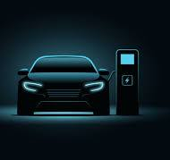

The Evolution of Electric Cars
Published on: 2024-05-24 by Jane Doe 1

Electric cars have come a long way since their inception. From the early models that had limited range and power to the latest high-performance vehicles, the evolution has been remarkable. Today, electric cars are known for their efficiency, environmental benefits, and advanced technology. In this post, we'll take a journey through the history of electric cars and see how they have transformed the automotive industry
Top 5 Sports Cars of 2024
Published on: 2024-05-23 by John Smith
2024 has been an exciting year for sports car enthusiasts. With advancements in technology and design, manufacturers have introduced some truly stunning models. From the sleek Ferrari F8 Tributo to the powerful Porsche 911 Turbo S, this year's lineup offers something for every car lover. Join us as we count down the top 5 sports cars of 2024 and explore what makes each of them special.